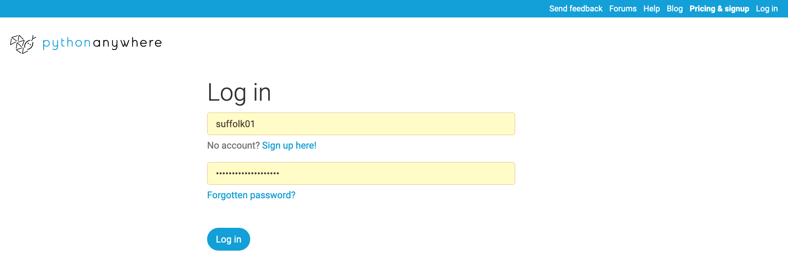
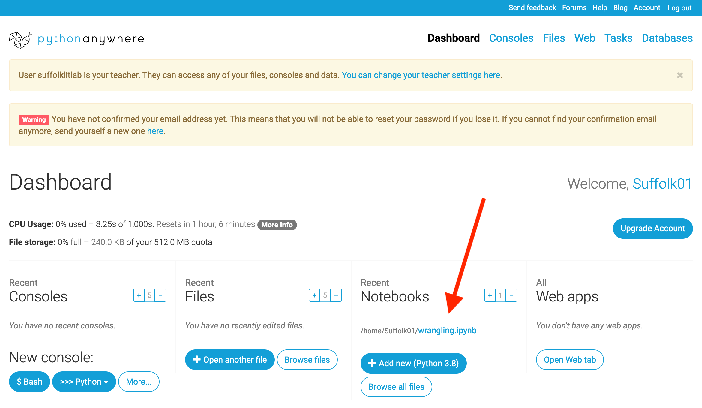
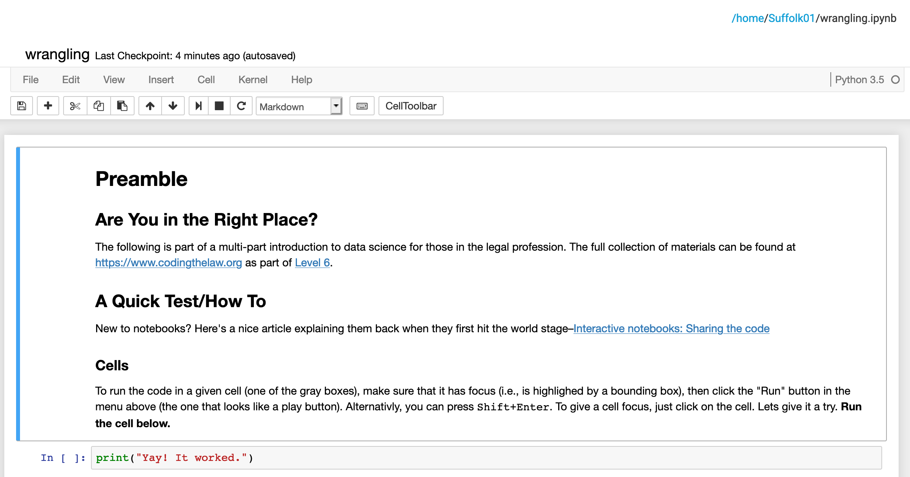
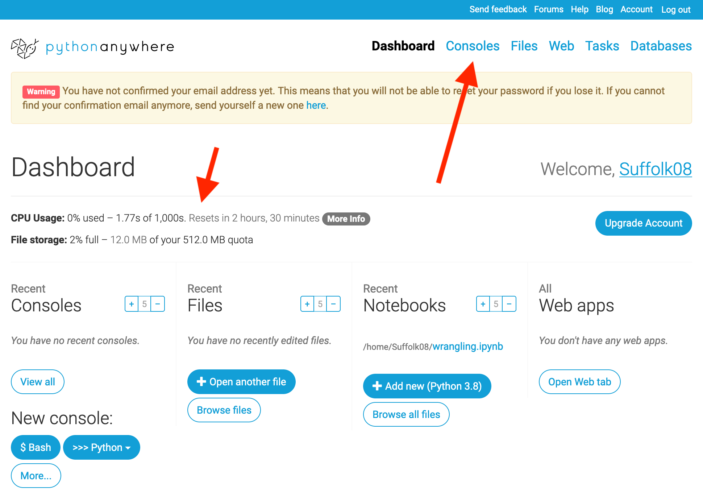
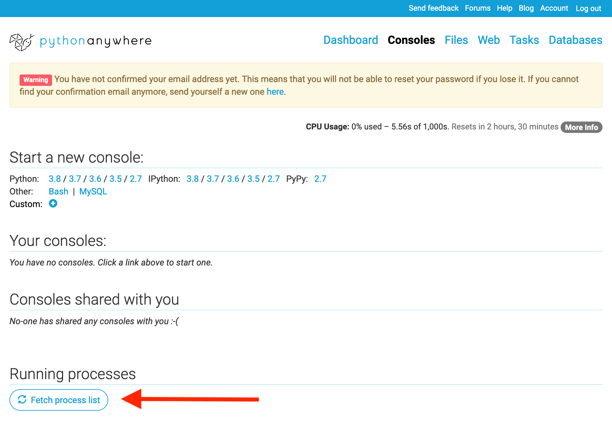
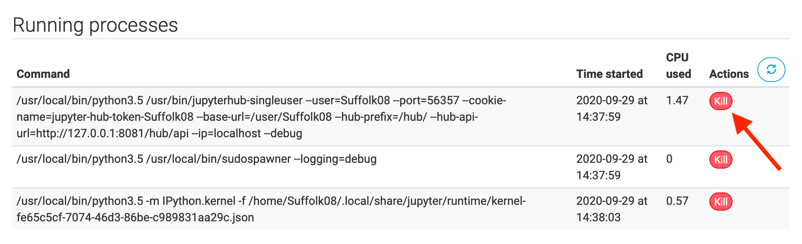
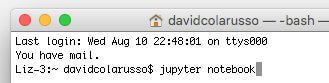

FWIW, here is a link to Levels eight, eleven, twelve, and thirteen.
This level does NOT ask you to turn in the product of any coding work. In addition to answering our standard reading questions, it expects only that you will work along with the materials provided to get a sense of the tools. It does this because I suspect you will have tons of questions, and I hope to address them when we meet synchronously. That being said, you should do your best to work through everything and write down questions as you go.
Most of our videos, esp. those found under the Knowledge Base header are walkthroughs. They are intended as an opportunity for you to familiarize yourself with tools by following along. No one is expecting you to memorize their content. Treat them instead as recipes, i.e., as references you will come back to when needed.
We will spend a lot of time below cleaning and preparing data for analysis. This reality is in stark contrast to the dream of data standards—the hope that it doesn't have to be this way. That being said, let's take a moment to recognize the dream.
Optional.
If all of this talk about data makes you scream, "show me the data." The following is for you. I have collected several places you might want to look to find curated data sets to give you an idea of what data looks like when they're collected in nice structured forms.
- Measures for Justice. An attempt to collect state-level criminal justice data.
- Data.gov. The federal government's open data portal.
- USA Facts. A private initiative to address the gaps in access to data needed by governments to make policy decisions across the US.
- Google's Data Set Search. A tool for searching across a number of publicly available data sets.
Readings
~ 1 Hour 17 Minutes
Knowledge Base
Everyone comes to this adventure with a different background. So this section is designed to be a menu of sorts. If you already know a topic well, you can skip the relevant material. Just answer the questions below, and section(s) will disappear accordingly. That being said, if a section doesn't disappear, you should do it. Any time you save skipping a topic, however, should be spent working on your final project or reading ahead in either Weapons of Math Destruction or How Not to Be Wrong. FYI, we will be reading all of Weapons of Math Destruction and all but parts III and V of How Not to Be Wrong.
All of that being said, let's see if we can pare things down.
Are you comfortable using Jupyter Notebooks and writing in Python?
You've gained a little more than an hour by dropping a video introduction to Jupyter Notebooks and Python. If you find yourself with questions, change this answer to unhide the introduction.
PythonAnywhere
~10 Minutes.
Below we're going to make use of a tool called Jupyter Notebooks. To avoid having everyone install a bunch of software to get notebooks working on your computers, registered students will be making use of PythonAnywhere. You should have received a user name and password at our last synchronous meeting. If you didn't DM Colarusso on Teams.
With these credentials in hand, visit pythonanywhere.com/ and login. Please refrain from changing your password.

Once you have finished logging in, you will see your dashboard. On that dashboard you'll see a set of options. Under the one labeled Recent Notebooks you should see a list of notebooks that I have placed there. To make sure everything is working click on the one called wrangle.ipynb. This should load the notebook. If you don't see the notebook in this list, click on the Browse all files button. This should show you a list of all your files, and you can click on the notebook there.

After it has loaded it should look like the image below. If you see this you're good to go. We'll revisit this notebook below (assuming you aren't already experienced with Notebook and Python).

We are NOT using the free tier of PythonAnywhere. And though they have given us a great educational discount, we couldn't afford unlimited use. ;) Consequently, when you're done with your notebook, you want to make sure that nothing is running in the background. To do that, we'll need to kill any processes running in the background. If you're about to do the work below, you can leave your notebook open and close it after you've finished working through the exercises.
A review of where you stand re: usage can be found at the top of the Dashboard (e.g., CPU Usage:0%). If you use more than what we've paid for everything will be slowed way down until our budget is reset.
After you've saved your notebook and its window, navigate to the Consoles page. There's a link at the top of the Dashboard.

Once you land on the Consoles page, scroll down to Running processes and click Fetch process list.

Given our useage of the site you can safely Kill all of your running processes. Just click the red Kill buttons.

Anaconda (optional)
~15 Minutes.
If you aren't a registered student or you would like to run notebooks locally, you can install Anaconda. Anaconda is collection of software products that will install a copy of notebooks and python on your computer.
To launch notebooks, after installation:
- Open a terminal/command prompt and navigate to the directory where you want to be working (e.g.,
/users/yourname/documents/)
- At the prompt enter:
jupyter notebook That should open up a new tab in your web browser.

That being said, here are the files you'll need to follow along with the PythonAnywhere folks and the videos below (assuming you aren't already experienced with Notebooks and Python).
To be clear, despite what I said above, I DO want you to start playing with the files from Dewey, Cheetham, and Howe. I've scheduled over an hour for you to "play." Since it's play, I'm not expecting you to produce anything to turn in, but you should wrestle with trying to create a new notebook, loading your data, and cleaning it up a bit.
Here are the files. Note: if you're using our PythonAnywhere accounts, they should be preloaded in the same folder as the notebook above.
Your Final Project
~1 Hour
Enrolled students will be presenting on their final project in two weeks. Take some time to work on your project, even if it's just planning or skills acquisition (e.g., working through the optional docassemble training from level 3). See The Final Project Rubric.
Self-Reflection and Logging Your Work
~20 min
As we do at the end of every level, we ask that you take a few minutes to reflect on how things are going. I've also included a set of reading questions to queue things up for our synchronous discussion. Your answers will be shared with me and it will let me know that I can look for any project work you may have posted. That being said, you've almost completed Level 6. Tell me how it's going by completing the form linked below.
Synchronous Meet Up, AKA our Class Time
~1.8 hours | October 11, 2022 @ 4pm Eastern
If you're an enrolled student, we'll be meeting in Sargent Hall Room 325 on Tuesday October 11th at 4pm. Our remote backup is to meet via Zoom at this link. You should have received the password from me earlier. If you don't have the password, and you are a registered student, DM me on Teams, and I can give you the password. If you're not an enrolled student, I'm afraid you can't join us.
We will use this time to: (1) troubleshoot any issues folks might have had working through the knowledge base; (2) look at and talk about your mission; and (3) discuss the readings.
† Time estimates are just that—estimates. The assumptions used to calculate reading time are as follows: 48 pages is assumed to take roughly an hour to read. When working with non paginated texts, it is assumed that a page is roughly equal to 250 words. Videos assume both 3X and 1X viewing. Estimates for coding are based on past experience. Each level should include about 6 hours and 40 min of work.